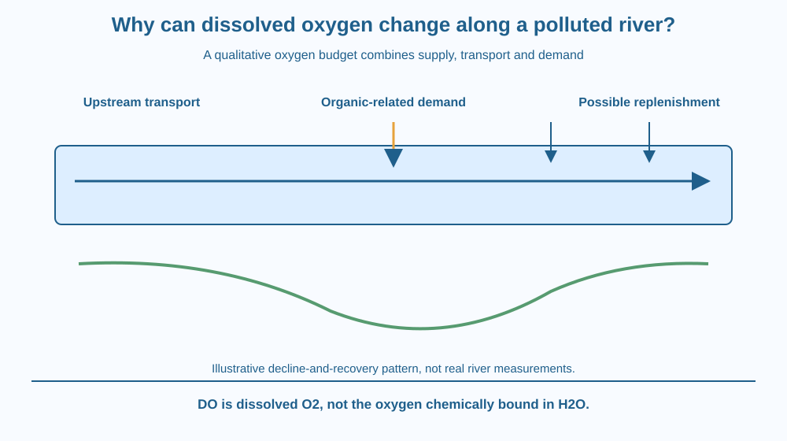

Explain changing dissolved oxygen along a river as a balance of supplies, transport and demands. Connect organic loading with oxygen use without treating one visible sign as a complete water-quality assessment. Distinguish oxygen dissolved in water from the oxygen atoms chemically bound inside water molecules.
A river can flow through an area while its dissolved-oxygen concentration changes from one location to another. More water movement does not guarantee that every reach has identical oxygen conditions.
Organic inputs, mixing with air, temperature, biological activity and incoming water can all alter the balance. A clear-looking reach can therefore have conditions that are not obvious from a photograph.
The useful question is how oxygen enters, leaves and is consumed within a defined region. A budget model is more informative than labelling the whole river healthy or unhealthy from one observation.
Dissolved oxygen, often abbreviated DO, is oxygen gas present within the water as dissolved molecules. It is different from the oxygen chemically bonded in H2O. Aquatic organisms do not obtain their needed oxygen simply by treating every water molecule as freely available oxygen gas.
Exchange with the atmosphere can add oxygen when conditions favour net entry. Turbulence and mixing influence contact and transport. Flow also moves water with different oxygen concentrations between regions.
Biological activity can add or consume oxygen. Photosynthetic organisms can contribute during suitable light conditions, while respiration and other processes consume oxygen. We treat those earlier mechanisms as background and focus here on their combined river-scale balance.
Added organic matter can increase oxygen demand as microorganisms process it. If consumption rises faster than supply and transport replace oxygen, dissolved concentration can fall. The effect depends on the material, conditions and time, not simply on the presence of any leaf or organic particle.
Biochemical oxygen demand describes oxygen use associated with biological processing under specified test conditions. A measured demand value is not the same as the oxygen concentration currently present. One concerns a consumption process over conditions and time; the other is a state at a place and moment.
Temperature affects oxygen solubility: warmer water generally holds less dissolved oxygen at comparable saturation conditions. It can also influence biological activity. Therefore identical organic inputs need not produce identical oxygen patterns in waters with different conditions.
A river section may show a fall and later recovery as demand and replenishment change downstream. That pattern is a possible model, not a universal curve for every polluted river. Tributaries, sediments, flow and daily biological cycles can modify it.
DO is one important indicator, not a complete safety certificate. A satisfactory-looking value does not prove absence of pathogens, toxic substances or every other problem. This lesson does not provide a drinking-water threshold or diagnose a named Indian river.
Draw a river-reach box with arrows for oxygen entering from air and upstream water. Add arrows for oxygen use and downstream transport. Keep amount and concentration distinct by remembering that concentration also depends on water volume.
Increase the organic-demand arrow in a copy of the model while leaving supply unchanged. Predict a tendency toward lower DO. Then increase mixing or add an oxygen-rich inflow and ask how the balance could change.
Use qualitative arrows rather than invented real concentrations. The model explains competing processes without pretending to calculate a river from a few icons or assuming every reach is perfectly mixed.
The SVG shows an upstream region, an organic-input location and downstream reaches. Separate arrows represent air exchange, transport and oxygen demand. A qualitative curve illustrates one possible decline-and-recovery pattern.
The curve has no real concentration values or site names. Its caption states that actual patterns depend on local conditions and time. A separate note distinguishes DO from oxygen bound in water.
The illustration does not repeat a food chain or the detailed cellular respiration pathway. Its target is the river-scale balance and why a change in one input can alter water-quality conditions downstream.

Water-quality monitoring in India can include DO alongside many other measurements. Sampling time and location matter because the same reach can vary through a day or season.
A wastewater input can affect a river even when the added material is not visually dramatic. Conversely, a photograph of cloudy water cannot quantify oxygen demand or identify its cause. Appropriate observations and analysis are needed.
Students should not enter rivers, collect wastewater or use an improvised classroom result to decide whether water is drinkable. Supplied diagrams and professionally documented data are suitable for learning the balance model safely.
Use paper and arrow cards. No water sample, chemical reagent or biological incubation is needed.
Write qualitative model on the page. Arrow sizes are not measured rates. Ask a partner to identify the difference between current DO and a demand process. The activity should produce a reasoned tendency, not a numerical river diagnosis.
Why could a daytime DO measurement differ from a night measurement at the same location? Identify possible supply and demand changes without assuming one process is always dominant.
Now imagine warm water entering a reach. What two types of effect might be considered: altered solubility and changed biological rates? Keep these possibilities distinct rather than blaming every oxygen change on one visible pollution source.
What does dissolved oxygen refer to?
Answer: A — DO concerns dissolved O2 rather than the oxygen forming part of each water molecule.
Why can organic loading lower DO?
Answer: B — Consumption can increase beyond the rate at which oxygen is replenished.
A reach has a favourable-looking DO value. What should you avoid concluding from that alone?
Answer: C — DO is not a complete test for pathogens, toxic substances or all other hazards.
Create a sampling-plan diagram with several river positions and a recorded time. List DO, temperature and relevant context as different observations, while leaving actual measurement to appropriate supervised methods.
Write one possible explanation for a downstream decline and one alternative influence. Your conclusion must not turn the illustrative curve into a claim about a real river or use one oxygen reading to certify drinking-water safety.
Water can contain oxygen atoms in every H2O molecule and still have too little dissolved oxygen for certain aquatic organisms. Chemical identity and available dissolved gas are different levels of description. Recognising that distinction makes the river budget meaningful rather than treating the presence of water itself as an unlimited oxygen supply.
River dissolved oxygen reflects competing supply, transport and demand; organic loading can lower it, while temperature, mixing and time shape the actual pattern.